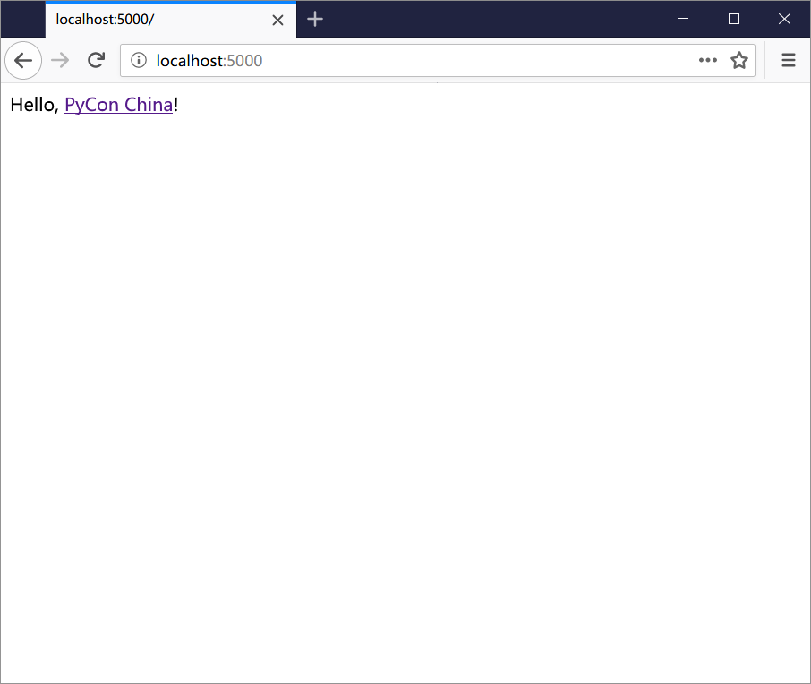
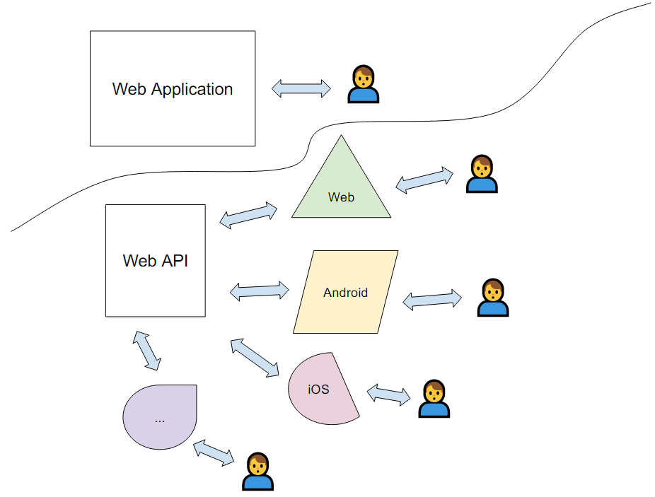
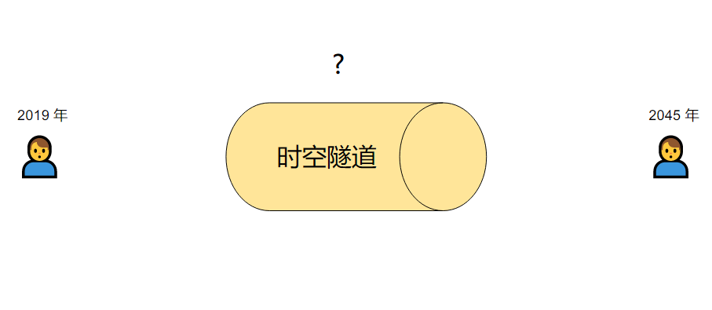
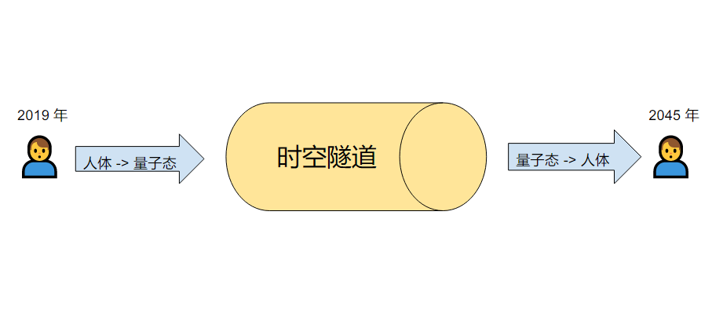

class: center, middle, title <h1>基于 Flask 的 Web API 开发指<span id="blink">南</span> <div class="corner-ribbon top-right sticky orange">v2.0</div></h1> 李辉（Grey Li） 🐍 PyCon China 2019 成都 --- ## 李辉 / Grey Li - 野生程序员 - [Flask](https://github.com/pallets/flask) 维护者之一 - 《[Flask Web 开发实战](http://helloflask.com/book/)》作者 - [HelloFlask](http://helloflask.com) 管理员 - 个人网站 [greyli.com](http://greyli.com) --- class: center, middle # 听众调查时间 📃 --- class: center, middle, inverse ## 四分钟入门 Flask 和 Web API 开发 --- ## 一分钟认识 Flask .footnote[https://palletsprojects.com/p/flask/] -- - 短定义：一个 Python Web 微框架 -- - 长定义：一个主要基于 Werkzeug 和 Jinja 的轻量 WSGI Web 程序框架 -- - 无术语：一个帮助你更方便开发 Web 程序/动态网站的工具，只内置了一些基础功能，其他的功能都要通过扩展来实现 -- - 列表： - Web 微框架（Web development, one drop at a time） - 微核心（Werkzeug + Jinja2）+易于扩展（第三方扩展） - 自由灵活，更 Pythonic -- - 图： .center[<img src="./images/flask.jpg" height="80px">] --- ## 一分钟入门 Flask 开发 install ```bash $ pip install flask ``` -- code ```python # app.py from flask import Flask app = Flask(__name__) @app.route('/') def hello(): return 'Hello, <a href="https://cn.pycon.org">PyCon China</a>!' ``` -- run ```bash $ flask run ... * Running on http://127.0.0.1:5000/ (Press CTRL+C to quit) ``` ---  --- ## 一分钟认识 Web API -- - 短定义：JSON/XML over HTTP -- - 长定义：可以使用 HTTP 协议进行访问，返回 XML 或 JSON 格式数据的 API -- - 无术语：给机器/程序使用，通过网络访问，返回 JSON 或 XML 格式纯数据的接口。 -- - 列表： - 可以使用 HTTP 访问的 URL 数据集合 - 返回 JSON 或 XML 格式的纯数据 - 使用 URL 描述数据 - 使用不同的 HTTP 方法表示不同的操作 -- - 图：<img src="./images/api-fake.png"> ---  --- ## 一分钟入门 Web API 开发 code ```python # app.py from flask import Flask app = Flask(__name__) @app.route('/') def hello(): return { 'message': 'Hello, PyCon China!', 'url': 'https://cn.pycon.org' } ``` run ```bash $ flask run ... * Running on http://127.0.0.1:5000/ (Press CTRL+C to quit) ``` --- ## 一分钟入门 Web API 开发 code ```python # app.py from flask import Flask app = Flask(__name__) @app.route('/') def hello(): * return { * 'message': 'Hello, PyCon China!', * 'url': 'https://cn.pycon.org' * } ``` run ```bash $ flask run ... * Running on http://127.0.0.1:5000/ (Press CTRL+C to quit) ``` --- ## 一分钟入门 Web API 开发 install [HTTPie](https://httpie.org/) ```bash $ pip install httpie ``` test ```bash $ http get :5000 HTTP/1.0 200 OK Content-Length: 54 Content-Type: application/json Date: Tue, 17 Sep 2019 01:10:24 GMT Server: Werkzeug/0.15.6 Python/3.6.8 { "message": "Hello, PyCon China!", "url": "https://cn.pycon.org" } ``` --- ## 一分钟入门 Web API 开发 install [HTTPie](https://httpie.org/) ```bash $ pip install httpie ``` test ```bash $ http get :5000 HTTP/1.0 200 OK Content-Length: 54 *Content-Type: application/json Date: Tue, 17 Sep 2019 01:10:24 GMT Server: Werkzeug/0.15.6 Python/3.6.8 *{ * "message": "Hello, PyCon China!", * "url": "https://cn.pycon.org" *} ``` --- ## 参加 PyCon China 的收获 +1 <div class="framed"> <h3 class="blur">李明明 后端工程师</h3> <h4 class="blur">编程技能</h4> <ul class="blur"> <li>- 精通 Python、PHP、Java 等语言</li> <li>- 写过操作系统和编译器</li> <li>- 有亿万级高并发项目开发经验</li> <li>- 不用鼠标，不用 IDE，不用 Windows</li> </ul> <p> <span style="background: #bef5cb; padding: 10px"> +</span><span style="background: #cdffd8; padding: 10px 20px">- 了解 Flask 框架和 Web API</span> </p> <p> <span style="background: #bef5cb; padding: 10px"> +</span><span style="background: #cdffd8; padding: 10px 20px">- 能够使用 Flask 进行 Web API 开发</span> </p> </div> --- class: middle, center, inverse # Web API 术语梳理 --- class: middle ### Flask 使用 cookie 而不是 session 存储 session 信息。在处理 cookie 的时候，Flask 会把存储到 session 的 session 信息加密后放到 session cookie 里。🤔 --- ## session 四重奏 1. 用户会话（常规语境） 2. 在服务器端存储用户会话的认证实现方法（用户认证语境） 3. Flask 提供的全局变量的名字（Flask 语境） 4. 一块 Cookie 的键（Flask 实现用户认证语境） -- <hr> Flask 使用 cookie 而不是 **session**（2） 存储 **session**（1） 信息。在处理 cookie 的时候，Flask 会把存储到 **session**（3） 的 **session**（1） 信息加密后放到 **session**（4） cookie 里。 --- ## 术语梳理的方式 - 尽量使用英文形式 - 尽量使用正确的术语 - 了解这个术语的英文形式、含义和来源 - 了解某一个术语在不同语境下的不同含义 - 了解某个术语相关的术语，了解这些术语之间的关联和区别 --- ## 使用 HTTP 协议通过网络调用的 API -- - API / API 接口 .footnote[ - https://en.wikipedia.org/wiki/Application_programming_interface - https://en.wikipedia.org/wiki/Microservices - https://en.wikipedia.org/wiki/Representational_state_transfer - https://en.wikipedia.org/wiki/Web_service - https://en.wikipedia.org/wiki/Web_API ] -- - 微服务（Microservices） -- - REST API / RESTful API -- - Web 服务（Web Service） -- - Web API 🎈 --- ## 资源、端点和首部 -- - 资源（Resources） - = 数据（Data） -- - 端点（Endpoint） - = URI（Uniform Resource **Identifier**）：URL 和 URN 的父集 🎈 - = URL（Uniform Resource **Locator**）：URI 的最常见形式 🎈 - URN（Uniform Resource **Name**）：URI 的不常见形式 - 网址（Website address）：http:// helloflask.com - 超链接/链接（Hyperlink/Link）：[HelloFlask](http://helloflask.com) -- - HTTP 首部（Header） - = 首部 - = 头部 - 首部字段：首部中包含的某些信息 --- ## 请求和响应处理 -- - 序列化 / 反序列化（Serialization / Deserialization） .footnote[ https://en.wikipedia.org/wiki/Serialization ] --- ## 请求和响应处理 - 序列化 / 反序列化（Serialization / Deserialization）  .footnote[ https://en.wikipedia.org/wiki/Serialization ] --- ## 请求和响应处理 - 序列化 / 反序列化（Serialization / Deserialization）  .footnote[ https://en.wikipedia.org/wiki/Serialization ] --- ## 请求和响应处理 - 序列化 / 反序列化（Serialization / Deserialization） <img src="./images/timetravel2.png" width="700px"> .footnote[ https://en.wikipedia.org/wiki/Serialization ] --- ## 请求和响应处理 - 序列化 / 反序列化（Serialization / Deserialization） .footnote[ - https://en.wikipedia.org/wiki/Marshalling_(computer_science) - https://en.wikipedia.org/wiki/Unmarshalling ] -- - 封装 / 解封装（Marshalling / Unmarshalling） - = 请求解析 / 响应格式化（Parsing / Formatting） -- - ≈ 请求处理 / 响应处理 --- ## 请求和响应处理 - 请求处理 JSON -> Dict -validating-> Object -> Database - 获取请求中的 JSON 数据 - 解析成 Python 字典 - 验证字典中的数据（Validating） - 把字典转换成模型类实例 - 响应处理 Database -(validating)-> Dict -> JSON - 按照某种模式（Schema）把模型类实例转换成字典 - 把字典转换成 JSON 数据 --- class: middle, center # 请补充和纠正 🙋♀️ 🙋♂️ --- class: center, middle, inverse # 什么样的 Web API 才是真正的 REST API？ --- ## REST 架构的约束条件 - 客户端-服务器（Client-Server） - 无状态（Stateless） - 缓存（Cacheability） - 分层系统（Layered System） - 按需代码（Code-On-Demand，可选） - 统一接口（Uniform Interface） - 请求中包含资源的 ID（Resource identification in requests） - 资源通过标识来操作（Resource manipulation through representations） - 消息的自我描述性（Self-descriptive messages） - 用超媒体驱动应用状态（Hypermedia as the engine of application state，HATEOAS） .footnote[ https://www.ics.uci.edu/~fielding/pubs/dissertation/rest_arch_style.htm ] --- class: center, middle # 基本没有完全符合 REST 要求的 Web API --- ## Richardson Maturity Model REST 成熟度模型 - Level 0：使用 **HTTP** - Level 1：引入**资源**的概念 - Level 2：引入 **HTTP 动词**的概念 - Level 3：引入了**超媒体**的概念 .footnote[ https://martinfowler.com/articles/richardsonMaturityModel.html ] --- class: center, middle  --- class: center, middle # 不一定要完全遵守这些约束 --- ## 使用名词表示资源 -- ```bash /token post delete ``` -- vs ```bash /login post /logout post ``` -- whatever. -- （正在面试除外） 🙄 -- ```bash /search ``` --- ## 使用首部字段描述 API 版本 -- ```http Accept: application/vnd.example.v1+json ``` or ```http Accept-version: v1 ``` -- vs ```bash https://api.example.com/v1/ https://api-v1.example.com/ ``` -- simple win. -- but don't do this: ```bash https://api.example.com/ https://new-api.example.com/ https://latest-api.example.com/ ``` --- class: center, middle # 60% RESTful is ok 🤗 --- class: middle ## 🔘 符合标准 ## 🔘 符合需求，易于实现和理解 --- class: middle ## 🔘 符合标准 ## ✅ 符合需求，易于实现和理解 --- class: center, middle, inverse # 有哪些辅助开发 Web API 的 Flask 扩展？ --- ## Flask Web API 扩展 - Flask-RESTful (key part deprecated) - Flask-RESTPlus (same with Flask-RESTful) - Flask-API (author left) - Flask-Restless (abandoned) - Flask-REST-JSONAPI - Flask-Potion - Flask-apispec 🎈 .footnote[ - https://github.com/flask-restful/flask-restful - https://github.com/noirbizarre/flask-restplus - https://github.com/flask-api/flask-api - https://github.com/jfinkels/flask-restless - https://github.com/miLibris/flask-rest-jsonapi - https://github.com/biosustain/potion - https://github.com/jmcarp/flask-apispec ] --- class: middle ### 🔘 Django ### ✅ Flask --- class: middle ### 🔘 方便 ### ✅ 灵活 + 可控制 --- class: middle ### 🔘 Pipenv ### ✅ pip + virtualenv/venv + pip-tools + ... --- class: middle ### 🔘 Flask + 一个大而全的 Web API 扩展\* ### ✅ Flask + 一组优秀的 Web API 工具组合 .footnote[ 注：在没有一个像 DRF 那样完美的大而全扩展选项的前提下…… ] --- class: middle, center # So... --- class: center, middle, inverse # 试试使用 Flask 原生实现 Web API 吧！ --- ## 生成 JSON 数据和响应 app ```python from flask import Flask, jsonify app = Flask(__name__) ``` data ```python data = { 'en': 'Hello', 'zh': '你好', 'jp': 'kong ni ji wa' } ``` return `jsonify` call ```python @app.route('/') def hello(): * return jsonify(data) ``` --- ## 生成 JSON 数据和响应 app ```python from flask import Flask app = Flask(__name__) ``` data ```python data = { 'en': 'Hello', 'zh': '你好', 'jp': 'kong ni ji wa' } ``` return dict (new in 1.1) ```python @app.route('/') def hello(): * return data ``` --- ## 资源端点（view function） ```python @app.route('/notes/<int:note_id>', methods=['GET']) def get_note(note_id): pass @app.route('/notes/<int:note_id>', methods=['PUT']) def update_note(note_id): pass @app.route('/notes/<int:note_id>', methods=['DELETE']) def delete_note(note_id): pass @app.route('/notes', methods=['GET']) def get_notes(): pass @app.route('/notes', methods=['POST']) def new_note(): pass ``` --- ## 资源端点（class based view） ```python from flask.views import MethodView class Note(MethodView): def get(self, note_id): pass def put(self, note_id): pass def delete(self, note_id): pass class Notes(MethodView): def get(self): pass def post(self): pass app.add_url_rule('/notes/<int:note_id>', view_func=Note.as_view('note'), methods=['GET', 'PUT', 'DELETE']) app.add_url_rule('/notes', view_func=Notes.as_view('notes'), methods=['GET', 'POST']) ``` --- ## 管理 API 版本 ```python from apis.v1 import api_v1 from apis.v2 import api_v2 def create_app() app = Flask(__name__) app.register_blueprint(api_v1, url_prefix='api/v1/') app.register_blueprint(api_v2, url_prefix='api/v2/') return app ``` --- ## 错误处理 ```python from flask import jsonify from werkzeug.exceptions import default_exceptions def api_abort(code, message=None, **kwargs): if message is None and code in default_exceptions: message = default_exceptions[code].description response = jsonify(code=code, message=message, **kwargs) response.status_code = code return response ``` - 用于主动返回错误响应 - 从 Werkzeug 获取 HTTP 错误的原因短语作为错误描述 - 可以自定义错误消息和附加其他数据 --- ## 错误处理 ```python from flask import jsonify from werkzeug.exceptions import default_exceptions def api_abort(code, message=None, **kwargs): if message is None and code in default_exceptions: * message = default_exceptions[code].description response = jsonify(code=code, message=message, **kwargs) response.status_code = code return response ``` - 用于主动返回错误响应 - 从 Werkzeug 获取 HTTP 错误的原因短语作为错误描述 - 可以自定义错误消息和附加其他数据 --- ## 错误处理 usage 1 ```python return api_abort(403) ``` usage 2 ```python return api_abort(code=400, message='Wrong password!') ``` usage 3 ```python @app.errorhandler(404) def page_not_found(e): return api_abort(404) @app.errorhandler(405) def method_not_allowed(e): return api_abort(405) @app.errorhandler(500) def internal_server_error(e): return api_abort(500) ``` --- ## 数据模式 ```python def note_schema(note): return { 'id': note.id, 'self': url_for('.note', note_id=note.id, _external=True), 'kind': 'Note', 'body': note.body, 'author': { 'id': 1, 'url': url_for('.user', _external=True), 'username': note.author.username, 'kind': 'User', }, } ``` -- ```python class Note(MethodView): def get(self, note_id): note = NoteModel.query.get_or_404(note_id) * return note_schema(note) ``` --- ## 数据模式（分页） ```python def notes_schema(notes, current, prev, next, pagination): return { 'self': current, 'kind': 'NoteCollection', * 'notes': [note_schema(note) for note in notes], 'prev': prev, 'last': url_for('.notes', page=pagination.pages, _external=True), 'first': url_for('.notes', page=1, _external=True), 'next': next, 'count': pagination.total } ``` --- ## 数据模式（分页） ```python class Notes(MethodView): def get(self): page = request.args.get('page', 1, type=int) per_page = request.args.get('per_page', 10, type=int) per_page_max = current_app.config['NOTE_PER_PAGE_MAX'] if per_page > per_page_max: per_page = current_app.config['NOTE_PER_PAGE'] pagination = NoteModel.query.paginate(page, per_page) notes = pagination.items current = url_for('.notes', page=page, _external=True) prev = None if pagination.has_prev: prev = url_for('.notes', page=page - 1, _external=True) next = None if pagination.has_next: next = url_for('.notes', page=page + 1, _external=True) * return notes_schema(notes, current, prev, next, pagination) ``` --- ## 请求解析 validate ```python def validate_note(json): body = json.get('body') if body is None or str(body).strip() == '': raise ValidationError('The note body was empty or invalid.') return Note(body=body, author=g.current_user) ``` -- exception ```python class ValidationError(ValueError): pass ``` -- error handler ```python @app.errorhandler(ValidationError) def validation_error(e): return api_abort(400, e.args[0]) ``` --- ## 请求解析 ```python class Notes(MethodView): @auth_required def post(self): """Create new note.""" * note = validate_note(request.get_json()) db.session.add(note) db.session.commit() response = jsonify(note_schema(note)) response.status_code = 201 response.headers['Location'] = url_for('.note', note_id=note.id, _external=True) return response ``` --- ## OAuth 2.0 Flow - 面向第三方大规模公开 - Authorization Code（授权码模式） - 面向公司内部公开 - Resource Owner Password Credentials（密码模式） .footnote[ https://auth0.com/docs/api-auth/which-oauth-flow-to-use#oauth-2-0-terminology ] --- ## 身份认证 ```python class AuthToken(MethodView): def post(self): grant_type = request.form.get('grant_type') username = request.form.get('username') password = request.form.get('password') # validate grant_type, username and password token, expiration = generate_token(user) response = jsonify({ 'access_token': token, 'token_type': 'Bearer', 'expires_in': expiration }) response.headers['Cache-Control'] = 'no-store' response.headers['Pragma'] = 'no-cache' return response app.add_url_rule('/oauth/token', view_func=AuthToken.as_view('token'), methods=['POST']) ``` --- ## 身份认证 ```python from flask import g, current_app, request from itsdangerous import TimedJSONWebSignatureSerializer as Serializer,\ BadSignature, SignatureExpired def generate_token(user): expiration = 3600 s = Serializer(current_app.config['SECRET_KEY'], expires_in=expiration) token = s.dumps({'id': user.id}).decode('ascii') return token, expiration def validate_token(token): s = Serializer(current_app.config['SECRET_KEY']) try: data = s.loads(token) except (BadSignature, SignatureExpired): return False user = User.query.get(data['id']) if user is None: return False g.current_user = user return True ``` --- ## 身份认证 ```python from functools import wraps def auth_required(f): @wraps(f) def decorated(*args, **kwargs): token_type, token = get_token() if request.method != 'OPTIONS': if token_type is None or token_type.lower() != 'bearer': return api_abort(400, 'The token type must be bearer.') if token is None: return token_missing() if not validate_token(token): return invalid_token() return f(*args, **kwargs) return decorated ``` --- ## 身份认证 ```python def get_token(): if 'Authorization' in request.headers: try: token_type, token = request.headers['Authorization'].\ split(None, 1) except ValueError: token_type = token = None else: token_type = token = None return token_type, token ``` --- ## 身份认证 ```python def invalid_token(): response = api_abort(401, error='invalid_token', error_description='Either the token was expired or invalid.') response.headers['WWW-Authenticate'] = 'Bearer' return response def token_missing(): response = api_abort(401) response.headers['WWW-Authenticate'] = 'Bearer' return response ``` --- ## 推荐的学习路径 0. 了解 Web API 的设计原则 1. 学习 Flask 原生实现 2. 学习搭配其他工具 - 请求解析 Webargs - 响应格式化 Marshmallow - 文档 APISpec - 用户认证 Flask-HTTPAuth、Flask-OAuthlib、Authlib .footnote[ - https://github.com/marshmallow-code/webargs - https://github.com/marshmallow-code/marshmallow - https://github.com/marshmallow-code/apispec - https://github.com/miguelgrinberg/flask-httpauth - https://github.com/lepture/flask-oauthlib - https://github.com/lepture/authlib ] --- ## 其他 Web API 框架 - Django REST Framework (Django) - Hug - APIStar - Starlette - FastAPI - Falcon - Connexion (Flask) - Eve (Flask) - …… .footnote[ - https://github.com/encode/django-rest-framework - https://github.com/hugapi/hug - https://github.com/encode/apistar - https://github.com/encode/starlette - https://github.com/tiangolo/fastapi - https://github.com/falconry/falcon - https://github.com/zalando/connexion - https://github.com/pyeve/eve ] --- ## NoteAPI - Web API 示例程序集合 - 帮助你选择适合的框架/扩展 - 使用不同的 REST/API 框架、Flask 扩展、工具实现同一个 Web API .footnote[ https://github.com/greyli/noteapi ] -- - （目前只是一个 README 项目 😐） --- class: center, middle, inverse # Q&A --- ## 谢谢 - email: withlihui@gmail.com - website: [greyli.com](http://greyli.com) - code: [github.com/greyli/noteapi](https://github.com/greyli/noteapi) - slides: [github.com/greyli/pyconchina2019-api](https://github.com/greyli/pyconchina2019-api)